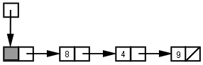
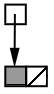
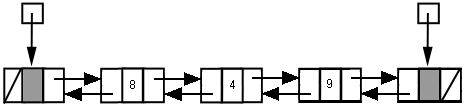
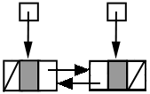

The goals and methods for creating user-defined Linked Lists
are similiar to those described in
the
Array Lists document.
We will create a
LListAdapter class from which we
can derive our implementation classes.
We are interested in linked lists created both from singly-linked
(forward-only) node structures as well as doubly-linked
node structures. Towards this end two implementations
SingleLList and
DoubleLList are created.
Description
Comparison of LinkedList/ArrayList
The linking structure of linked lists creates different
behavior from array lists, here are the key difference:
| |
ArrayList |
LinkedList |
| get/set random access |
accessing an element (get/set) at an index is O(1) |
accessing an element (get/set) at an index is O(n) because we must proceed through
a sequence of node pointers to get to the correct position.
|
| add/remove at first and last positions |
add at the last position is
O(1) in general; an additional
O(n) cost is incurred
when the array's capacity is increase;
if the capacity is maintained efficiently, the overall average cost is
still O(1)
remove at the last position is always
O(1)
add/remove at the first position is always
O(n)
because the entire array is shifted
|
add/remove at the first or last positions is
O(1)
(with doubly-linked lists)
|
| add/remove at arbitrary position |
add/remove at arbitrary position is
O(n) due to shifting
|
add/remove at arbitrary position is O(n)
due to sequencing through pointers
|
| space usage |
wasted space varies according to the number of
unused array positions; in order to keep
average add time efficient,
O(n) wasted space
must be created at capacity increases
|
the links are "wasted" by virtue of not holding data; thus
there is always
O(n)
wasted space
|
In general terms, an
ArrayList
is a better choice when we're interested in
"random positional" access of elements whereas a
LinkedList is better suited for end-based access.
Member functions
The
LinkedList implements the
Queue and
Deque interfaces in addition
to the
List interface. All
of these interface/implementation declarations are useful
in practical situations:
Deque<E> L = new LinkedList<E>();
Queue<E> L = new LinkedList<E>();
List<E> L = new LinkedList<E>();
The
Queue and
Deque interfaces offer a bewildering
array of choices of member functions, as described in the
Java Data Structures (java.util)
document.
Here is a table of operation descriptions focusing on the non-index
based operations. Keep in mind that
first and
last
signify the
leftmost and
rightmost elements, respectively.
| description |
versions |
| add to last |
void addLast(e),
boolean add(e),
boolean offerLast(e)
|
| add to first |
void addFirst(e),
boolean push(e),
boolean offer(e),
boolean offerLast(e)
|
| remove last element |
E removeLast(),
E pollLast()
|
| remove first element |
E removeFirst(),
E remove(),
E pop(),
E poll(),
E pollFirst()
|
| get last element |
getLast(),
peekLast() |
| get first element |
getFirst(),
element(),
peek(),
peekFirst() |
The main difference between the "
remove_" and "
get_"
operations versus the "
poll_" and "
peek_" operations is
that for the former ones, an exception is thrown if the list is empty,
whereas for the latter, a
null is returned.
Of course, we can also use the more obvious declaration:
which would give us access to all the relevant operations, but in
practice one tends to focus on one the
Queue,
Deque,
or
List interface operations exclusively.
Demo Program
Create a NetBeans project
LListDemo.
Assuming you use the default setup of NetBeans, the main class will be
named
LListDemo.
Change the content to the following:
Try running both
main1 and
main2 which illustrate
different features of Linked Lists.
LListAdapter
Our
LListAdapter demonstrates all the functions
satisfied by
LinkedList. The functions are all "unimplemented"
in the sense that their only code is to throw an
UnsupportedOperationException.
All of our user-defined versions will be extensions of
LListAdapter.
As described in the
User defined Array Lists
document, the
Serializable implementation is avoided.
In order to create this in NetBeans, create a new Java Class:
Class Name: LListAdapter
package: llist
Then insert the following content
Linked List Types
Singly Linked
A singly-linked list represents a minimalistic linked representation.
The entire list is accessed by the
first pointer.
A single
next element within each node
moves forward in the list and all nodes contain
list element data. The list is
null-terminated.
The empty list is simply the
null pointer.
Singly Linked With Header
It is often common to add an always-present "dummy" node which
first
points to.
The data in this node, whatever it may be is ignored.
The list is
null-terminated.
The empty list points to the dummy node which has
next == null.
|
(8,4,9)
|

|
Empty List:
|

|
Doubly Linked
A doubly linked list is accessed by first and last pointers. Going forward and
backwards are treated symmetrically with employ both internal
next (forward) and
prev (backward) pointers.
Doubly Linked with Header and Footer
The always-present dummy nodes at the start and end serve the same purpose
as the single header node in the singly linked list above. The
first and
last pointer always point to these respective nodes.
|
(8,4,9)
|

|
Empty List:
|

|
Singly-linked Implementation
Our first attempt at an implementation uses a singly-linked list. Both
the with-header and without-header have advantages and disadvantages. For
simplicity we'll implement a the version without header.
Create a Java Class:
Class Name: SingleLList
package: llist
Then insert the following content
Testing
The
main1 function (not
main2)
can execute for
SingleLList in place of
LinkedList.
Add the
import statement to
Main:
import llist.*;
Replace the definition of
L in
main1
and reset
main to call
main1
public static void main1(String[] args) {
//Deque<String> L = new LinkedList<String>();
Deque<String> L = new SingleLList<String>();
...
Description
SingleLList uses the inner class:
The data members of
SingleLList are:
The add functions
If we have at least one element in the list these statements would serve
to add to either first or last:
- add to first:
- add to last:
If, however, the list is empty, we need to do something different:
This operation serves both for add to first and add to last on an
empty list.
With this in place, our public
addFirst and
addLast functions both use this style:
if (isEmpty()) {
addToEmptyList(elt);
} else {
// do the "usual thing"
}
The removeFirst function
Removing the first element effectively means moving the
first pointer ahead. We simply need to capture the data value
before losing access to the old pointer.
Singly-linked limitations
SingleLList purposefully avoids many operations.
The foremost of these
is
removeLast, which the singly-linked list structure
is not equipped to
handle efficiently.
Removing the
first element is easy because
there is nothing before it. At all other positions it is different, because
you would need to access the
previous element in order to be able to
link it to the
next element, thereby bypassing the deleted node.
Doubly-linked Implementation
A realistic implementation must be doubly-linked. As with the singly linked version,
one can use the dummy header and footer nodes. We'll implement
a version with these features.
Create a Java Class:
Class Name: DoubleLList
package: llist
Then insert the following content
Testing
Replace
DoubleLList in place of
LinkedList
in both
main1 and
main2 by
by replacing the definition of
L:
//Deque<String> L = new LinkedList<String>();
Deque<String> L = new DoubleLList<String>();
...
Description
The doubly-linked used uses an inner class:
Establishing the initial state looks like this:
A doubly linked list makes the list effectively symmetrical
and thereby makes sense out of the
following required operations which would be, at best, tricky with singly-linked lists:
- descendingIterator
- removeLast
Helpers for add/remove operations
Using a doubly linked list with header nodes, all add and remove operations are
derivable from these three operations:
public add/remove operations
These are the add operations:
These are the remove operations: